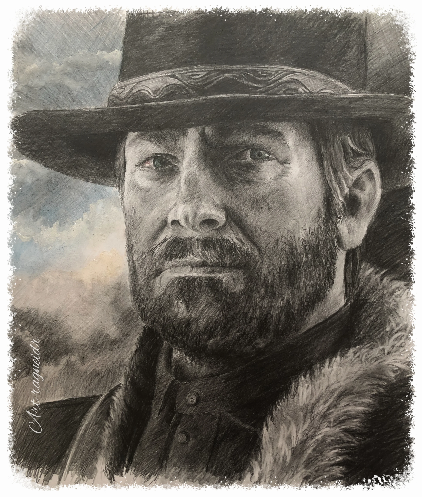

Outlaw, Gunslinger, and Veteran Member of the Van der Linde Gang

Summary:
Seasoned gunslinger and experienced outlaw with a strong moral compass,
seeking opportunities to apply my skills in strategic leadership, resource
acquisition, and conflict resolution.
Education:
School of Hard Knocks
Self-Taught | Dates: 1860s-1890s
Specialized in practical survival skills, marksmanship, horseback
riding, and tactical planning.
Studied under the mentorship of Dutch van der Linde, mastering the
principles of leadership, loyalty, and resourcefulness.
Work Experience:
Veteran Member
Van Der Linde Gang | Various Locations | 1870s-1899
Led and participated in numerous successful heists, train robberies, and
bank jobs.
Developed and executed complex strategic plans to outmaneuver law
enforcement and rival gangs.
Negotiated alliances and managed internal conflicts to maintain group
cohesion.
Trained new recruits in the gang’s values, survival techniques, and
combat skills.
Ensured the safety and well-being of the gang’s members, often at
personal risk.
Enforcer
Various Employers | Various Locations | 1860s-1870s
Provided protection services for merchants, settlers, and traveling
caravans.
Collected debts and enforced agreements on behalf of clients, utilizing
persuasive and forceful methods.
Managed supply acquisition and logistics, ensuring operations ran
smoothly under challenging conditions.
Skills:
Marksmanship: Expert sharpshooter with proficiency in pistols, rifles,
and shotguns.
Horsemanship: Skilled rider with experience in handling various breeds
and managing equine care.
Tactical Leadership: Proven ability to lead small to large groups in
high-stakes situations.
Negotiation: Adept at brokering deals and resolving disputes under tense
circumstances.
Survival Skills: Extensive knowledge of wilderness survival, including
hunting, foraging, and shelter construction.
Combat Training: Trained in hand-to-hand combat, knife fighting, and
guerrilla tactics.
Awards, Certifications, and Achievements:
"Dutch's Right Hand" Award – Recognized for unwavering loyalty and
service to Dutch van der Linde, contributing to the gang's survival and
success.
Survivor of Blackwater – Survived the Blackwater massacre, demonstrating
resilience and tactical skill in a high-pressure environment.
Legendary Bounty Hunter Certification – Certified by various law
enforcement agencies (unofficial), known for the capture of high-value
targets across the West.
Honor Among Thieves – Recognized for maintaining a personal code of
honor, balancing outlaw life with acts of kindness and justice.